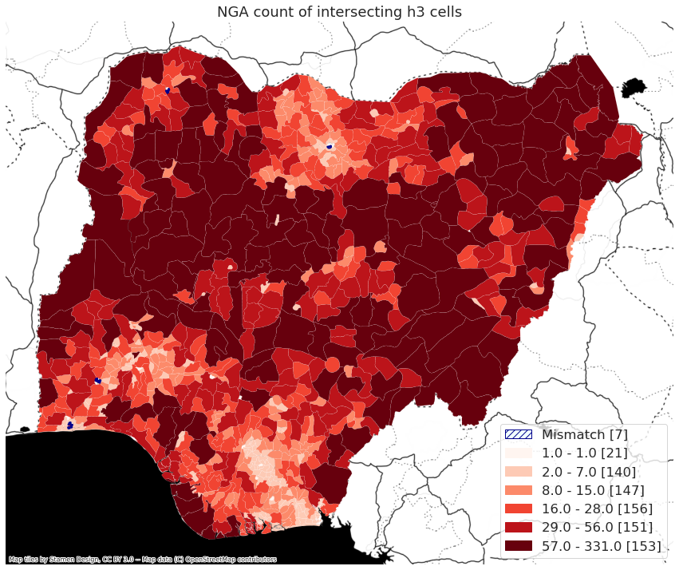
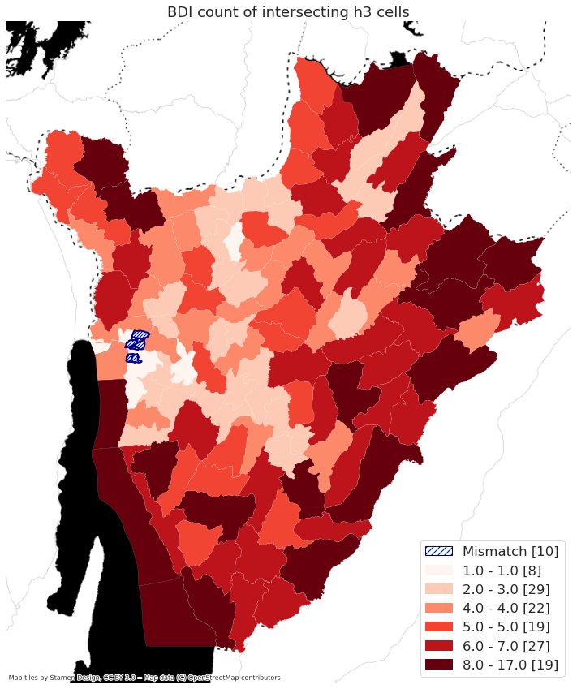
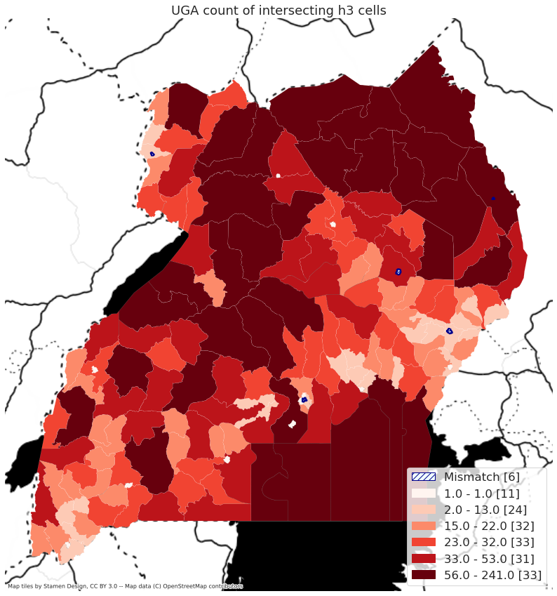

Comparing H3 cells to administrative boundaries#
The fundamental process of the Space2Stats program is to calculate zonal statistics on foundational geospatial data at a standard, global hexagon grid, and then aggregate that grid to the administrative boundaries.
This notebook focuses on exploring the intersection of the H3 grids with the official, high-resolution World Bank administrative boundaries.
Show code cell source
import sys, os, importlib, math, multiprocessing
import rasterio, geojson
import pandas as pd
import geopandas as gpd
import numpy as np
import matplotlib.pyplot as plt
from h3 import h3
from tqdm import tqdm
import GOSTRocks.rasterMisc as rMisc
from GOSTRocks.misc import tPrint
sys.path.append("../src")
import h3_helper
import country_zonal
%load_ext autoreload
%autoreload 2
The autoreload extension is already loaded. To reload it, use:
%reload_ext autoreload
Show code cell source
admin_bounds = "/home/public/Data/GLOBAL/ADMIN/ADMIN2/HighRes_20230328/shp/WB_GAD_ADM2.shp"
sel_iso3 = "UGA"
out_folder = f"/home/wb411133/projects/Space2Stats/"
if not os.path.exists(out_folder):
os.makedirs(out_folder)
h3_level = 6
Show code cell source
inA = gpd.read_file(admin_bounds)
# run all of Africa at once
afr_iso3 = inA.loc[inA['WB_REGION'] == 'AFR', "ISO_A3"].values
afr_iso3 = list(set(afr_iso3))
args = []
for iso3 in afr_iso3:
selA = inA.loc[inA['ISO_A3'] == iso3].copy()
cur_out = os.path.join(out_folder, iso3)
if not os.path.exists(cur_out):
os.makedirs(cur_out)
args.append([iso3, selA, cur_out])
# for each country in Africa, calcluate the number of level 6 h3 hexabins in each admin3 region
# intersection is performed on hexabin centroid
def run_mp(sel_iso3, selA, out_folder):
h3_generator = country_zonal.country_h3_zonal(sel_iso3, selA, "GAUL_2", 6, out_folder)
h3_res = h3_generator.generate_h3_grid(cols_to_include=["NAM_1", "NAM_2"])
adm_res = h3_generator.summarize_adm_h3_join(verbose=True)
h3_generator.write_output(write_h3=True, write_admin=True)
return(adm_res)
''' This worked well to generate the data, but kept hanging when looking for summary results
with multiprocessing.Pool(len(args)) as pool:
res = pool.starmap(run_mp, args)
'''
all_res = []
for arg in args:
res = run_mp(*arg)
all_res.append(res)
'''
1. Number of h3 cells
2. Number of adm bounds
3. Number of adm bounds with 0 h3 centroids
4. Number of adm bounds with 0 - 1 h3 centroids
5. Number of adm bounds with 2 - 5 h3 centroids
'''
08:49:27 UGA: H3 [6178], ADM [170], ADM0 [6], ADM1 [11], ADM2 [2]
08:49:33 BWA: H3 [14013], ADM [10], ADM0 [0], ADM1 [0], ADM2 [0]
08:49:38 ERI: H3 [3319], ADM [58], ADM0 [2], ADM1 [2], ADM2 [1]
08:49:40 CPV: H3 [113], ADM [22], ADM0 [4], ADM1 [4], ADM2 [5]
08:49:42 MRT: H3 [28833], ADM [44], ADM0 [0], ADM1 [0], ADM2 [0]
08:49:49 SOM: H3 [20018], ADM [74], ADM0 [0], ADM1 [0], ADM2 [0]
08:49:55 NER: H3 [31228], ADM [67], ADM0 [0], ADM1 [0], ADM2 [0]
08:50:04 CAF: H3 [17441], ADM [71], ADM0 [0], ADM1 [1], ADM2 [0]
08:50:10 MUS: H3 [50], ADM [10], ADM0 [0], ADM1 [1], ADM2 [4]
08:50:11 GAB: H3 [7503], ADM [48], ADM0 [0], ADM1 [0], ADM2 [0]
08:50:15 SWZ: H3 [436], ADM [53], ADM0 [0], ADM1 [2], ADM2 [16]
08:50:18 NGA: H3 [27292], ADM [775], ADM0 [7], ADM1 [21], ADM2 [95]
08:50:27 CIV: H3 [12305], ADM [33], ADM0 [0], ADM1 [0], ADM2 [0]
08:50:33 KEN: H3 [15251], ADM [290], ADM0 [0], ADM1 [0], ADM2 [0]
08:50:38 LBR: H3 [3622], ADM [136], ADM0 [0], ADM1 [0], ADM2 [0]
08:50:42 ZWE: H3 [9151], ADM [62], ADM0 [0], ADM1 [1], ADM2 [0]
08:50:49 GIN: H3 [8109], ADM [38], ADM0 [2], ADM1 [1], ADM2 [0]
08:50:53 GMB: H3 [332], ADM [37], ADM0 [0], ADM1 [2], ADM2 [14]
08:50:54 GNQ: H3 [809], ADM [7], ADM0 [0], ADM1 [1], ADM2 [0]
08:50:54 STP: H3 [29], ADM [2], ADM0 [0], ADM1 [0], ADM2 [1]
08:50:58 MLI: H3 [38481], ADM [53], ADM0 [0], ADM1 [0], ADM2 [0]
08:51:11 ZAF: H3 [31968], ADM [52], ADM0 [0], ADM1 [0], ADM2 [0]
08:51:24 RWA: H3 [623], ADM [30], ADM0 [0], ADM1 [0], ADM2 [2]
08:51:26 SYC: H3 [10], ADM [60], ADM0 [53], ADM1 [6], ADM2 [1]
08:51:27 BEN: H3 [3749], ADM [77], ADM0 [0], ADM1 [1], ADM2 [9]
08:51:31 AGO: H3 [30701], ADM [164], ADM0 [0], ADM1 [0], ADM2 [1]
08:51:41 MWI: H3 [2764], ADM [29], ADM0 [0], ADM1 [0], ADM2 [0]
08:51:45 LSO: H3 [792], ADM [247], ADM0 [23], ADM1 [45], ADM2 [154]
08:51:49 ZMB: H3 [17418], ADM [105], ADM0 [0], ADM1 [0], ADM2 [0]
08:51:55 BFA: H3 [9159], ADM [45], ADM0 [0], ADM1 [0], ADM2 [0]
08:52:00 SEN: H3 [5742], ADM [45], ADM0 [0], ADM1 [0], ADM2 [0]
08:52:04 NAM: H3 [20997], ADM [107], ADM0 [6], ADM1 [4], ADM2 [9]
08:52:15 COD: H3 [58131], ADM [30], ADM0 [0], ADM1 [0], ADM2 [1]
08:52:33 CMR: H3 [13801], ADM [58], ADM0 [0], ADM1 [0], ADM2 [0]
08:52:40 MDG: H3 [15878], ADM [119], ADM0 [5], ADM1 [3], ADM2 [5]
08:52:48 SLE: H3 [2498], ADM [16], ADM0 [0], ADM1 [0], ADM2 [1]
08:52:52 GHA: H3 [8628], ADM [217], ADM0 [1], ADM1 [2], ADM2 [11]
08:52:59 BDI: H3 [644], ADM [134], ADM0 [10], ADM1 [8], ADM2 [70]
08:53:02 TGO: H3 [1930], ADM [30], ADM0 [0], ADM1 [0], ADM2 [0]
08:53:06 ETH: H3 [33201], ADM [92], ADM0 [0], ADM1 [0], ADM2 [0]
08:53:18 SDN: H3 [46894], ADM [87], ADM0 [0], ADM1 [0], ADM2 [0]
08:53:33 TZA: H3 [22617], ADM [182], ADM0 [2], ADM1 [2], ADM2 [9]
08:53:47 SSD: H3 [17256], ADM [78], ADM0 [0], ADM1 [0], ADM2 [0]
08:53:57 TCD: H3 [32141], ADM [70], ADM0 [0], ADM1 [0], ADM2 [0]
08:54:09 COG: H3 [9279], ADM [89], ADM0 [1], ADM1 [0], ADM2 [0]
08:54:20 MOZ: H3 [18766], ADM [154], ADM0 [0], ADM1 [0], ADM2 [0]
08:54:32 COM: H3 [46], ADM [3], ADM0 [0], ADM1 [0], ADM2 [0]
08:54:33 GNB: H3 [1042], ADM [39], ADM0 [0], ADM1 [0], ADM2 [3]
Show code cell source
all_res = pd.DataFrame(all_res, columns=['n_H3', 'n_ADM', 'n_ADM0', 'n_ADM1', 'n_ADM2'])
all_res['iso3'] = afr_iso3
all_res.to_csv(os.path.join(out_folder, "H3_admin_summary.csv"))
Mapping#
# generate map for NGA
def map_country(sel_iso3, legend_loc="lower right"):
selA = inA.loc[inA['ISO_A3'] == sel_iso3].copy()
cur_folder = os.path.join(out_folder, sel_iso3)
h3_generator = country_zonal.country_h3_zonal(sel_iso3, selA, "GAUL_2", 6, cur_folder)
cMap = h3_helper.map_choropleth(h3_generator.adm_bounds_h3, "h3_count", legend_loc=legend_loc)
plt.title(f"{sel_iso3} count of intersecting h3 cells")
return(cMap)
map_country("NGA")

map_country("LSO")
/home/wb411133/.conda/envs/ee/lib/python3.9/site-packages/geopandas/plotting.py:678: UserWarning: The GeoDataFrame you are attempting to plot is empty. Nothing has been displayed.
warnings.warn(
map_country("BDI")

map_country('UGA')
